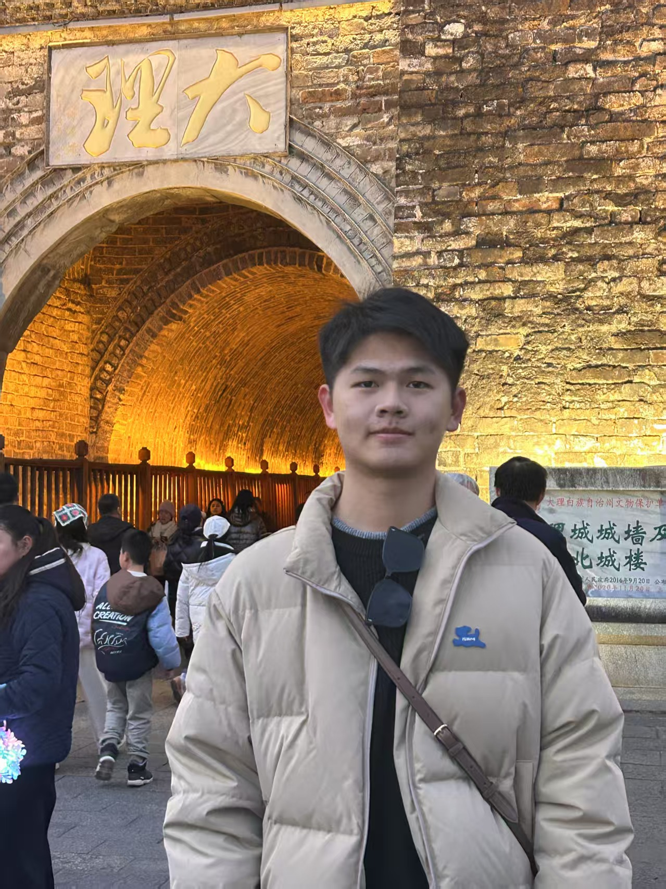

Weijia LiufuMaster's Student
School of Computer Science, Sun Yat-sen University |
 |

Biography
I am a Master's student in Computer Technology at the School of Computer Science, Sun Yat-sen University. I received my B.Eng. in Intelligent Science and Technology from the School of Intelligent Engineering at Sun Yat-sen University in June 2025. I am passionate about embodied intelligence and robotics. I am familiar with Linux, proficient in Python, and experienced with simulation software such as NVIDIA Isaac Sim.
My research interests lie in Embodied Intelligence, especially vision-language-action models for robotic manipulation. My work includes recovery-driven policy optimization, scalable data generation for bimanual manipulation, and open-ended simulation for embodied AI.
Feel free to contact me by email if you are interested in discussing or collaborating with me.
Education
| [09/2025 - Present] | Sun Yat-sen University, School of Computer Science Master of Computer Technology |
| [09/2021 - 06/2025] | Sun Yat-sen University, School of Intelligent Engineering B.Eng. in Intelligent Science and Technology |
Projects
|
RePO-VLA: Recovery-Driven Policy Optimization for Vision-Language-Action Models in Bimanual Manipulation First Author · NeurIPS 2026 Goes beyond successful demonstrations by using failure trajectories and recovery actions for policy optimization. Built an automated data-generation pipeline on RoboTwin to scale training data and value estimation, with stronger success rates and robustness in simulation and on real robots. |
|
A1: Adaptive Truncated Vision-Language-Action Model from Affordance to Action Collaborator · CVPR 2026 Findings Developed the data-processing pipeline and interfaces used for model training, and carried out part of the real-robot testing and deployment. |
|
EchoVLA: Robotic Vision-Language-Action Model with Synergistic Declarative Memory for Mobile Manipulation Collaborator · ECCV 2026 Worked across the full robot stack, from hardware assembly to system integration, and supported hardware-software debugging for stable operation and data collection. |
|
InfiniteWorld: An Open-Ended Simulation Framework for Embodied AI with Social and Collaborative Benchmarks Co-first Author · Under Review at IEEE Transactions on Multimedia (TMM) A unified and extensible simulator built on NVIDIA Isaac Sim for vision-language robot interaction, with methods for physical asset construction and general robot-interaction benchmarks. |
Honors & Awards
| [2026] First Prize (Champion), Inaugural Global Embodied AI Developer Conference (EAIDC 2026) and "Juliang Plan" Hackathon, Greater Bay Area Peak Competition |
| [2026] Excellence Award, 27th China Robotics and Artificial Intelligence Competition, Guangdong Provincial Selection |
| [2025] Third Place, ATEC 2025 Technology Elite Competition (Online Round) |
| [2022–2024] First-Class and Second-Class Outstanding Scholarships, and Special Scholarship, Sun Yat-sen University |
| [2023] First Prize (Provincial), National College Mathematics Competition |
| [2023] Third Prize (Provincial), National College Mathematical Modeling Contest |
| [2023] Excellent Report Award, 13th "Jinjing Ledao" Economic Hotspot Analysis Competition |
| Outstanding Student Officer, Youth League Student Union, School of Intelligent Engineering, Sun Yat-sen University |